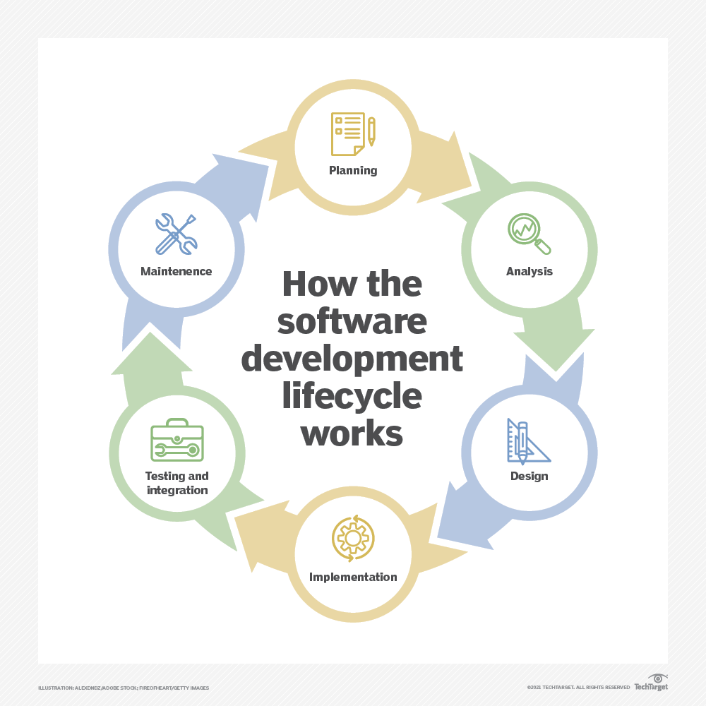

SOFTWARE
Software is a set of instructions, data or programs used to operate computers and execute specific tasks. It is the opposite of hardware, which describes the physical aspects of a computer. Software is a generic term used to refer to applications,
scripts
and programs that run on a device. It can be thought of as the variable part of a computer, while hardware is the invariable part.
The two main categories of software are application software and system software. An application is software that fulfills a specific need or performs tasks. System software is designed to run a computer's hardware and provides a platform for applications to run on top of.
Early software was written for specific computers and sold with the hardware it ran on. In the 1980s, software began to be sold on floppy disks, and later on CDs and DVDs. Today, most software is purchased and directly downloaded over the internet. Software can be found on vendor websites or
application service provider
websites.
Examples and types of software
Among the various categories of software, the most common types include the following:
Application software. The most common type of software, application software is a computer software package that performs a specific function for a user, or in some cases, for another application. An application can be self-contained, or it can be a group of programs that run the application for the user. Examples of modern applications include office suites, graphics software, databases and database management programs, web browsers, word processors, software development tools, image editors and communication platforms.
System software. These software programs are designed to run a computer's application programs and hardware. System software coordinates the activities and functions of the hardware and software. In addition, it controls the operations of the computer hardware and provides an environment or platform for all the other types of software to work in. The OS is the best example of system software; it manages all the other computer programs. Other examples of system software include the firmware, computer language translators and system utilities.
Driver software. Also known as device drivers, this software is often considered a type of system software. Device drivers control the devices and peripherals connected to a computer, enabling them to perform their specific tasks. Every device that is connected to a computer needs at least one device driver to function. Examples include software that comes with any nonstandard hardware, including special game controllers, as well as the software that enables standard hardware, such as USB storage devices, keyboards, headphones and printers.
Middleware. The term middleware describes software that mediates between application and system software or between two different kinds of application software. For example, middleware enables Microsoft Windows to talk to Excel and Word. It is also used to send a remote work request from an application in a computer that has one kind of OS, to an application in a computer with a different OS. It also enables newer applications to work with legacy ones.
Programming software. Computer programmers use programming software to write code. Programming software and programming tools enable developers to develop, write, test and debug other software programs. Examples of programming software include assemblers, compilers, debuggers and interpreters.
Application software Application software consists of many programs that perform specific functions for end users, such as writing reports and navigating websites. Applications can also perform tasks for other applications. Applications on a computer cannot run on their own; they require a computer's OS, along with other supporting system software programs, to work.
These desktop applications are installed on a user's computer and use the computer memory to carry out tasks. They take up space on the computer's hard drive and do not need an internet connection to work. However, desktop applications must adhere to the requirements of the hardware devices they run on.
Web applications, on the other hand, only require internet access to work; they do not rely on the hardware and system software to run. Consequently, users can launch web applications from devices that have a web browser. Since the components responsible for the application functionality are on the server, users can launch the app from Windows, Mac, Linux or any other OS.
System software
System software sits between the computer hardware and the application software. Users do not interact directly with system software as it runs in the background, handling the basic functions of the computer. This software coordinates a system's hardware and software so users can run high-level application software to perform specific actions. System software executes when a computer system boots up and continues running as long as the system is on.

click this butten to get this to your mail